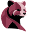

<main>
  <mat-sidenav-container
    class="container w-full h-full"
    [ngClass]="{ isOpened: nav.opened }"
    style="background-color: inherit"
  >
    <mat-sidenav
      fixedInViewport
      #nav
      class="w-80 flex flex-col justify-between"
      mode="over"
    >
      <mat-nav-list class="w-full h-full flex flex-col justify-between">
        <div class="button-items flex flex-col gap-y-8">
          <button class="close-button w-8" (click)="nav.toggle()">
            
          </button>

          <app-button-nav
            *ngFor="let buttonData of buttonsData"
            #button
            [buttonData]="buttonData"
            (activeEvent)="activeButton($event)"
          />
        </div>
        <section class="media-section flex items-center justify-center gap-x-8">
          <ng-container *ngFor="let socialMedia of socialMedias">
            <app-social-media-nav [socialMedia]="socialMedia" />
          </ng-container>
          <div class="separate w-px h-14"></div>
        </section>
      </mat-nav-list>
    </mat-sidenav>

    <mat-sidenav-content>
      <header class="flex h-12 pl-4 gap-x-3 items-center fixed z-10 white">
        <button (click)="nav.toggle()">
          
        </button>
        <div class="title flex items-center justify-center w-6 pt-1">
          
        </div>
      </header>
      <ng-content></ng-content>
    </mat-sidenav-content>
  </mat-sidenav-container>
</main>
